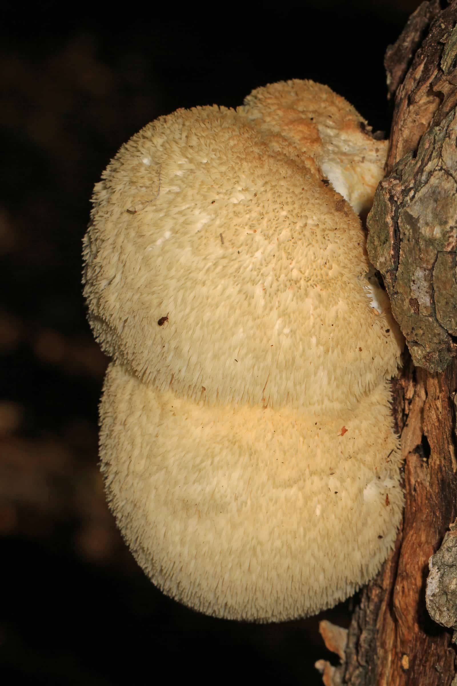

Know · Sourcing notes
Wildcrafted, cultivated, and what we can prove.
Wildcrafted is not a certificate. It is a word for how a plant was gathered, and nobody checks it. Three specification sheets on this site name a place the material is said to have come from. The rest say the origin is not printed, which is the honest thing to write and the least useful thing to read. Here is where each family comes from in the cases where I know, and what is missing everywhere else.
By Reiss Davies Ausar11 September 202612 minute read

A woman at the counter last month turned a jar of the plain gel over, read the back of it, and asked me which beach. I told her the sheet says cold Atlantic and that I could not narrow it any further than that. She put the jar down. Then she picked it up again, which I think was the right order to do those two things in.
This piece is about that gap, and about the words the trade uses to paper over it. What wildcrafted means and what it does not. Where each family on the shelf comes from, in the three cases where a place is printed at all. What is missing everywhere else, and why our specification sheets say so out loud instead of quietly leaving the row off.
01What wildcrafted means
Wildcrafted means gathered from where it was already growing, rather than sown, planted, farmed on lines or grown in a pool. That is the whole of it. It is a word about how the material came out of the ground or off the rock, and it is not a word about anything else.
It is not a certification. There is no register of wildcrafted producers in this country, no inspector, no code on the label you can look up and no standard anyone signs up to. It is not a grade, it is not a test and it is not a place. A wild plant can be gathered carelessly off a poor stretch of coast and a farmed one can be grown by somebody who knows exactly what they are doing. The word does not tell you which of those you are holding.
What it does tell you, on a jar of sea moss, is one genuinely useful thing: not farmed. That distinction is worth printing, because the cheap substitute for Atlantic Chondrus is a farmed plant and the two are sold under the same three words on a great many labels. I have put the two species side by side elsewhere.

02The Atlantic, which is an ocean
Start with the plant most of the shelf is built on. Chondrus crispus is the base of Northern Soul, of the plain Chondrus Crispus gel and of the Seaking capsules. All three sheets carry the same base row in the same words: Irish sea moss, cold Atlantic, wildcrafted, not pool grown. The ingredient card on each of them adds that it is picked by hand off cold Atlantic rocks at low tide.
Now read that as a record rather than as a sentence. Species, in Latin: there. Wild or farmed: there. Method: by hand, at low tide. Ocean: the Atlantic. Country: not there. Coast: not there. Shore: not there. Season: not there. Supplier: not there. Date off the rocks: not there.
The Atlantic covers roughly a fifth of the surface of the planet. As provenance it is a small step up from saying the sea, and I am not going to pretend it is more than that on a page I wrote myself.
There is a second thing in that row worth pulling out. Irish sea moss is the common name of the species. It is not a statement that this plant came from Ireland. We print it because it is what the plant has been called since at least the nineteenth century and dropping it would confuse more people than it helped, and the Latin name sits next to it every single time so you can see which of the two names is doing the work.


I would like to fill that row in. Doing it would mean a supplier willing to put a shore, a season and a batch on paper and stand behind it, and until somebody hands me that, the row says cold Atlantic and stops.
03Tanzania, and a listing that says two things
Purple Mwani is the one jar on the shelf whose sheet names a country. The species is Eucheuma cottonii, the warm-water alga, and the origin row says Tanzania.
Getting to that one word took an argument with our own listing. The live listing says the seaweed is cultivated in the Indian Ocean off Tanzania in one line. Further down the same listing it says the seaweed is wild crafted, from Zanzibar. Zanzibar is part of Tanzania, so the place is not the problem. Cultivated and wildcrafted are opposites, and a listing that prints both is telling you that neither word was checked before it went up.
So the sheet says what our team actually saw. They went out to the mwani farms in 2020, and the plant is grown on lines strung between stakes in shallow water and cut back every six weeks or so. Farmed. That is what the origin row says, and the contradiction in the listing is printed on the page next to it, because you should be able to see the working rather than take my word for the conclusion.
A country is a good deal better than an ocean, and it is still a long way short of a record.
What is missing there: which island, which village, which farm, which family, which season, and who sold it on to us. The word farmed at least points at a person who could answer those, which is exactly why it is the more useful word here and not the weaker one.

04The Altai, which is a range
Shilajit is not a plant, so wildcrafted does not apply to it at all. It is a resin that seeps out of rock. The sheet names the Altai Mountains, and naming a range is worth doing, because shilajit comes out of rock in more than one mountain region on earth and a jar that says only mountain sourced has told you nothing you could check or ask a second question about.
The Altai runs across the borders of Russia, Kazakhstan, Mongolia and China. Naming it moves the answer from anywhere to somewhere. It does not move it to a seam, a collector or a date, and my page says as much: there is no chain of custody on it, and I am not going to write one so the page reads better.
Two other words ride on that jar and both of them are categories rather than figures. Dual-extracted means two solvents run one after the other instead of one on its own. It does not say which two, at what temperature, for how long, or how much raw material went in for the weight that came out, and there is no legal definition to fall back on. Lab tested says a test happened. It does not say when, on which batch, at which laboratory, by which method, or what came back. A certificate says those things, because a certificate is a document with a batch number on it. There is no certificate published on this site, so the testing row says printed as a category and leaves it there.

05A harvest record and a marketing word
Here is the distinction the rest of this piece rests on, and it is not a subtle one. A harvest record is a set of facts with a person's name attached to each of them. A marketing word is a word.
A record says: this species, this part of the plant, gathered here on this date by these people, dried this way, shipped then, tested at this laboratory on this batch, and here is the certificate. Every line of that can be wrong, and every line of it can be checked. That is the point of it. A word can be neither.
| On the label | Who checks it | What it actually tells you |
|---|---|---|
| Wildcrafted | Nobody. No register, no audit, no code. | That the material was gathered rather than farmed, if the seller is telling the truth. Nothing about where, when, or by whom. |
| Cultivated, farmed | Nobody, as a word. | That the plant was grown deliberately. For sea moss it is the accurate word for most of what is sold in this country, and the one least often printed. |
| Lab tested | Nobody, unless a certificate with a batch number is published alongside it. | That a test happened. Not when, not on which batch, not at which laboratory, not by which method, and not what came back. |
| Dual-extracted | Nobody. There is no legal definition of the phrase. | Two solvents rather than one. Not which two, at what temperature, for how long, or the ratio of material in to weight out. |
| Organic | A certifier, if one is named with its code. | With a certifier named, an audited standard you can look up. With none named, nothing. Our anamu listing calls the growing organic and names no certifier, so that page makes no organic claim. |
| Sustainably sourced, ethically sourced | Nobody. | Nothing you could check, and nothing a follow-up question could get hold of. |
| Irish sea moss | Nobody. It is a common name, not a place. | The species Chondrus crispus. Not the country Ireland, and on a good deal of what is sold under those words, not even that species. |
| A named country of origin | The seller, who is the person you would be asking anyway. | Where the material is said to have come from. It is the only line in this table that is a record rather than a word, and it is the line most jars leave off. |
Notice how narrow wildcrafted turns out to be in that table. It does real work, but only one line of work, and only in a category where the alternative is farming. On a dried root or a piece of bark it decides almost nothing, which is precisely why it turns up on so many of them.

06Schedule 8, and the ones nobody may pick
Wildcrafted has a legal edge to it, and it is worth knowing where that edge sits before you admire the word on a label.
Hericium erinaceus, lion's mane, is genuinely rare in Britain, mostly in the beech woods of the south, and it is one of the few fungi with legal protection here. It is listed on Schedule 8 of the Wildlife and Countryside Act 1981, which means picking it in the wild is an offence here. If you find one, photograph it and leave it where it is.
So a British jar boasting about wild-picked lion's mane would be boasting about an offence. Ours does not boast about it, because ours does not say where the fungus was grown or gathered at all. The specification sheet prints that as not printed on the current label, and I am not going to improve on it by naming a country I cannot evidence.
The general point is the one I would rather you took away. Wild is not automatically the better word. For some species in some places it is an offence, for others it is a question of season, permission and a person who knows the ground, and none of that is visible from the word itself standing on a jar.

07What the sheets say, family by family
I went through the whole site before writing this. Three specification sheets name a place the material is said to have come from: the Altai for the resin, Tanzania for Purple Mwani, and the Caribbean and South America for anamu, which is a pair of regions rather than a country and is printed as the listing's own words. One more names an ocean. Everything else either says the origin is not printed, or carries no origin row at all because there was nothing to put in it.
| Family | What the sheet names | What it does not |
|---|---|---|
| Chondrus crispus: Northern Soul, the plain gel, Seaking | Cold Atlantic. Wildcrafted, not pool grown. Picked by hand at low tide. | No country, no coast, no shore, no season, no supplier. |
| Eucheuma cottonii: Purple Mwani | Tanzania. Farmed on lines in shallow water, seen by our team in 2020. | No island, no village, no farm, no supplier. The listing also says wild crafted from Zanzibar in a second line, which contradicts the first. |
| Shilajit resin | The Altai Mountains. Dual-extracted. Lab tested. | No collection site, no collectors, no date off the mountain, and no certificate published to read. |
| Anamu | Caribbean and South America, as the listing states. | No country. The listing calls the growing organic and names no certifier, so no organic claim is made on the page. |
| Mushrooms: reishi, chaga, lion's mane, Mycrodose | Nothing. Chaga's host tree is named as birch, which is a fact about the fungus rather than about the jar. | No country for any of the four. |
| Roots and barks: ashwagandha, astragalus, ginseng, gotu kola, acacia, bugle, chanca piedra, gumbo limbo | Nothing, in most cases. Where a listing places the species in a region, that is where the plant grows, not where this jar was gathered. | No country of harvest and no supplier named. |
| Elite Noble Shungite Stone | Not printed for the piece. Shungite as a mineral is quarried in Karelia, in north west Russia. | Which is a statement about the rock and not about this stone. |
The rows that say not printed are the ones I get asked about least and think about most. They are not a placeholder for a fact I am about to add next month. Until a supplier gives me something better, they are the fact.

08What I would ask, in my shop or anyone else's
If you take one thing from this to a counter, take questions rather than a list of words to look for. The words are already on the jar. That is what they are for.
- Which species, in Latin. If the answer is sea moss, or Irish moss, with no second name behind it, you have not been told what you are buying.
- Wild or farmed, and which is this jar. Both are respectable answers. A shrug is not one.
- Which country. Not which ocean, not which continent, not which range.
- What is the most specific place you know, and how do you know it. This is the question that separates a record from a word, and it is the one sellers are least ready for.
- If it says lab tested, ask for the certificate. A batch number, a date, a laboratory, a method and a result. If there is no certificate, then the phrase is a category rather than a figure, and you should hear somebody say that out loud.
- If it says organic, ask who certified it. A named certifier and a code, or nothing at all.
- Ask what they do not know. The answer to that one will tell you more about a seller than the other six put together.
I would rather you walked out with a jar you can describe than one you can only praise. That is the whole reason the specification sheets on this site carry rows that say not printed, and the reason I have not quietly deleted those rows to tidy the page up.
The three that name a place
The jars this piece is about, with the fourth one included because its origin row names nothing at all, and that is the point.

Purple Mwani
£24.99The country is on the sheet. Eucheuma cottonii, farmed on lines off Tanzania, named as itself. £24.99 a jar, 20 days at one tablespoon.
See the specification
Shilajit Resin
£39.99The range is on the sheet. Altai resin, dual-extracted, 50 g in an amber glass jar, about two months. No chain of custody, and the page says so.
Add to bag
Chondrus Crispus
£34.99The ocean is on the sheet. Cold Atlantic Chondrus crispus, wildcrafted and not pool grown, with water and Omega DHA oil. One tablespoon a day.
Add to bag
Lion's Mane
£24.99Nothing is on the sheet. Origin not printed on the current label, and the count and milligrams are not printed either. Both gaps are on the page in writing.
Add to bagIf you want the long answer about anything on the shelf, ring the shop on 07946 806533, Tuesday to Sunday, and ask me the fourth question on that list. You will get what I know, including the parts I do not.

Reiss Davies Ausar
Founder and formulator at Herbase. Trading online since 2019 and behind the counter at 599 Smithdown Road, Liverpool, since August 2024. Author of three books on herbal practice. Book an hour with him if you want to go into more detail.